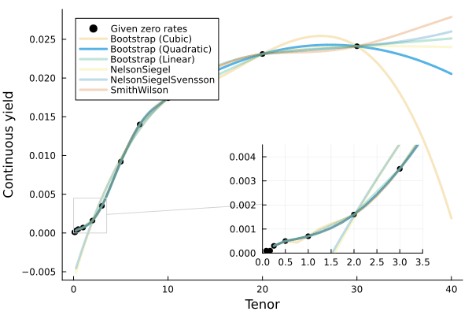

Packages
These packages are available for use in your project. Scroll down for more information and links to the associated repository for each one.
MortalityTables.jl
Work with standard mortality tables, parametric models, and survival calculations.
LifeContingencies.jl
Calculate insurance and annuity values, premiums, and reserves.
ActuaryUtilities.jl
Calculate present values, durations, convexities, internal rates of return, and sensitivities.
ExperienceAnalysis.jl
Calculate exposures and prepare insurance experience studies.
FinanceModels.jl
Build curves, contracts, stochastic models, and financial valuations.
EconomicScenarioGenerators.jl
Generate economic scenarios for existing ESG workflows; see compatibility notes below.
For consistency, you can lock any package in its current state and not worry about breaking changes to any code that you write. Julia’s package manager lets you exactly recreate a set of code and its dependencies. More information.
Current releases
Checked against the Julia General registry on October 12, 2026:
| Package | Latest registered release | Documentation |
|---|---|---|
| FinanceCore | 3.0.0 | Guide |
| FinanceModels | 7.0.1 | Migration guide |
| ActuaryUtilities | 6.0.0 | Upgrade guide |
| MortalityTables | 3.0.0 | Release notes |
| ExperienceAnalysis | 2.0.2 | Guide |
| LifeContingencies | 2.5.0 | Guide |
| EconomicScenarioGenerators | 0.7.0 | Repository |
FinanceModels 7, ActuaryUtilities 6, FinanceCore 3 and MortalityTables 3 work together and require Julia 1.10 or newer. The fall release overview explains the breaking changes and gives worked examples.
LifeContingencies 2.5 requires FinanceCore 2 and MortalityTables 1 or 2. Use a separate project for its examples. EconomicScenarioGenerators 0.7 supports FinanceCore 2 or 3, but its optional FinanceModels integration requires FinanceModels 6; version 0.7.1 with FinanceModels 7 compatibility is not yet registered. For short-rate simulation with FinanceModels 7, use its ShortRate models, simulate and pv_mc directly.
Adding and Using Packages
There are two ways to add packages:
- In the code itself:
using Pkg; Pkg.add("MortalityTables") - In the REPL, hit
]to enter Pkg mode and typeadd MortalityTablesMore info can be found at the Pkg manager documentation.
To use packages in your code:
using PackageNameMortalityTables.jl
Hassle-free mortality and other rate tables.
Features
- Bundled mort.soa.org data, with loaders for supported mortality-table layouts
survivalanddecrementfunctions to calculate decrements over period of time- Partial-year mortality calculations (
UniformDeaths,ConstantForce,Balducci) - Friendly syntax and flexible usage
- Extensive set of parametric mortality models.
Quickstart
Load and see information about a particular table:
julia> using MortalityTables
julia> vbt2001 = MortalityTables.table("2001 VBT Residual Standard Select and Ultimate - Male Nonsmoker, ANB")
MortalityTable (Insured Lives Mortality):
Name:
2001 VBT Residual Standard Select and Ultimate - Male Nonsmoker, ANB
Fields:
(:select, :ultimate, :metadata)
Provider:
Society of Actuaries
mort.SOA.org ID:
1118
mort.SOA.org link:
https://mort.soa.org/ViewTable.aspx?&TableIdentity=1118
Description:
2001 Valuation Basic Table (VBT) Residual Standard Select and Ultimate Table - Male Nonsmoker.
Basis: Age Nearest Birthday.
Minimum Select Age: 0.
Maximum Select Age: 99.
Minimum Ultimate Age: 25.
Maximum Ultimate Age: 120The package revolves around easy-to-access vectors which are indexed by attained age:
julia> vbt2001.select[35] # vector of rates for issue age 35
0.00036
0.00048
⋮
0.94729
1.0
julia> vbt2001.select[35][35] # issue age 35, attained age 35
0.00036
julia> vbt2001.select[35][50:end] # issue age 35, attained age 50 through end of table
0.00316
0.00345
⋮
0.94729
1.0
julia> vbt2001.ultimate[95] # ultimate vectors only need to be called with the attained age
0.24298Calculate survival and death probabilities over a range of ages:
julia> survival(vbt2001.ultimate,30,40) # the survival between ages 30 and 40
0.9894404665434904
julia> decrement(vbt2001.ultimate,30,40) # the decrement between ages 30 and 40
0.010559533456509524Non-whole periods of time are supported when you specify the assumption (ConstantForce(), UniformDeaths(), or Balducci()) for fractional periods:
julia> survival(vbt2001.ultimate,30,40.5,UniformDeaths()) # the survival between ages 30 and 40.5
0.9887676470262408Parametric Models
Parametric laws include Gompertz, Makeham, Weibull, and the new Gompertz2, Makeham2, Carriere1 and Carriere2 models. A law describes an instantaneous force of mortality; use decrement to obtain a probability over an age interval. For example:
m = MortalityTables.Gompertz(a=0.01,b=0.2)
hazard(m, 20) # instantaneous force of mortality at age 20
decrement(m, 20, 21) # probability of death between ages 20 and 21
decrement(m,20,25) # the five year cumulative mortality rate
survival(m,20,25) # the five year survival rateUse curtate_life_expectancy(model_or_rates, age) for expected complete future years, or complete_life_expectancy(model_or_rates, age) for expected remaining time including fractional years. These replace life_expectancy in version 3. Loading a CSV table requires using CSV to activate the extension.
ActuaryUtilities.jl
A collection of common functions/manipulations used in Actuarial Calculations.
A collection of common functions/manipulations used in Actuarial Calculations.
Quickstart
using ActuaryUtilities
cfs = [5, 5, 105]
times = [1, 2, 3]
discount_rate = 0.03
present_value(discount_rate, cfs, times) # ≈ 105.66
duration(Macaulay(), discount_rate, cfs, times) # 2.86
duration(discount_rate, cfs, times) # 2.78
convexity(discount_rate, cfs, times) # ≈ 10.63Features
Financial Maths
duration:Macaulay()andModified()duration for fixed cashflows;duration(DV01(), ...)gives signed dollar value lost per basis-point increase
convexityfor price sensitivity- Flexible interest rate options via the
FinanceModels.jlpackage. internal_rate_of_returnorirrto calculate the IRR given cashflows (including at timepoints like Excel’sXIRR)breakevento calculate the breakeven time for a set of cashflowsaccum_offsetto calculate accumulations like survivorship from a mortality vector
Sensitivities via Automatic Differentiation
sensitivities(curve, cashflows, times) returns value, duration and signed DV01 for a parallel continuous-rate shift. Add KeyRates(tenors) for exposures to a chosen tenor grid, and SecondOrder() for convexity and dollar convexity:
using ActuaryUtilities, FinanceModels
curve = ZeroRateCurve([0.03, 0.04, 0.045], [1.0, 5.0, 10.0])
cashflows, times = [5.0, 5.0, 105.0], [1.0, 2.0, 3.0]
risk = sensitivities(SecondOrder(), KeyRates([1.0, 5.0, 10.0]), curve, cashflows, times)
risk.dv01- Value and derivatives share the same valuation; automatic differentiation avoids a finite-difference bump size. Accuracy still depends on the model, interpolation and any calibration tolerances.
- Valuation callbacks support rate-dependent cashflows and separate discount, index and credit roles. The
IR01()andCS01()callback forms distinguish base-rate and credit-spread exposure. For fixed cashflows discounted bybase + credit, both equalduration(DV01(), base + credit, cashflows, times). - Contracts use effective duration by default, including how index rates affect their cashflows. Fixed-cashflow and contract APIs are described in the upgrade guide.
- Callbacks can differentiate through calibrated market quotes; Hull–White paths support sensitivities of the simulated valuation with fixed random draws.
Risk Measures
- Calculate risk measures for a given vector of risks:
CTEfor the Conditional Tail Expectation, orVaRfor the percentile/Value at Risk.
Insurance mechanics
policy_duration(issue_date, date)calculates the policy year; the former date-baseddurationmethod was renamed in version 6.
LifeContingencies.jl
Common life contingent calculations with a convenient interface.
Features
- Integration with other JuliaActuary packages such as MortalityTables.jl
- Fast calculations, with some parts utilizing parallel processing power automatically
- Use functions that look more like the math you are used to (e.g.
A,ä) with Unicode support - All of the power, speed, convenience, tooling, and ecosystem of Julia
- Flexible and modular modeling approach
Package Overview
- Leverages MortalityTables.jl for the mortality calculations
- Contains common insurance calculations such as:
Insurance(life,yield): Whole lifeInsurance(life,yield,n): Term life fornyearsä(life,yield):present_valueof life-contingent annuityä(life,yield,n):present_valueof life-contingent annuity due fornyears
- Contains various commutation functions such as
D(x),M(x),C(x), etc. SingleLifeandJointLifecapable- Interest rate mechanics via FinanceCore; compatible FinanceModels curves can also be used
- LifeContingencies documentation
Examples
Basic Functions
In a separate project with LifeContingencies 2.5, FinanceCore 2 and MortalityTables 2, calculate values for a 30-year-old male nonsmoker using the 2001 VBT table and a 5% annual effective interest rate. Pkg.add(["LifeContingencies", "FinanceCore", "MortalityTables"]) resolves that compatible set in an empty project.
using LifeContingencies
using MortalityTables
using FinanceCore
import LifeContingencies: V, ä # pull the shortform notation into scope
# load mortality rates from MortalityTables.jl
vbt2001 = MortalityTables.table("2001 VBT Residual Standard Select and Ultimate - Male Nonsmoker, ANB")
issue_age = 30
life = SingleLife( # The life underlying the risk
mortality = vbt2001.select[issue_age], # -- Mortality rates
)
yield = Periodic(0.05, 1)
lc = LifeContingency(life, yield) # LifeContingency joins the risk with interest
ins = Insurance(lc) # Whole Life insurance
ins = Insurance(life, yield) # alternate way to constructWith the above life contingent data, we can calculate vectors of relevant information:
cashflows(ins) # A vector of the unit cashflows
timepoints(ins) # The timepoints associated with the cashflows
survival(ins) # The survival vector
benefit(ins) # The unit benefit vector
probability(ins) # The probability of benefit paymentSome of the above will return lazy results. For example, cashflows(ins) will return a Generator which can be efficiently used in most places you’d use a vector of cashflows (e.g. pv(...) or sum(...)) but has the advantage of being non-allocating (less memory used, faster computations). To get a computed vector instead of the generator, simply call collect(...) on the result: collect(cashflows(ins)).
Or calculate summary scalars:
present_value(ins) # The actuarial present value
premium_net(lc) # Net whole life premium
V(lc,5) # Net premium reserve for whole life insurance at time 5Other types of life contingent benefits:
Insurance(lc,10) # 10 year term insurance
AnnuityImmediate(lc) # Whole life annuity immediate
AnnuityDue(lc) # Whole life annuity due
ä(lc) # Shortform notation
ä(lc, 5) # 5 year annuity due
ä(lc, 5, certain=5,frequency=4) # 5 year annuity due, with 5 year certain payable 4x per year
... # and more!Constructing Lives
SingleLife(vbt2001.select[50]) # no keywords, just a mortality vector
SingleLife(vbt2001.select[50],issue_age = 60) # select at 50, but now 60
SingleLife(vbt2001.select,issue_age = 50) # use issue_age to pick the right select vector
SingleLife(mortality=vbt2001.select,issue_age = 50) # mort can also be a keywordFinanceModels.jl
Flexible and composable yield curves and interest functions.
FinanceModels.jl provides a set of composable contracts, models, and functions that allow for modeling of both simple and complex financial instruments. The resulting models, such as discount rates or term structures, can then be used across the JuliaActuary ecosystem to perform actuarial and financial analysis.
Additionally, the models can be used to project contracts through time: most basically as a series of cashflows but more complex output can be defined for contracts.

QuickStart
using FinanceModels
# a set of market-observed prices we wish to calibrate the model to
# annual effective unless otherwise specified
q_rate = ZCBYield([0.01,0.02,0.03]);
q_spread = ZCBYield([0.01,0.01,0.01]);
# bootstrap a linear spline yield model
model_rate = fit(Spline.Linear(),q_rate,Fit.Bootstrap());
model_spread = fit(Spline.Linear(),q_spread,Fit.Bootstrap());
# the zero rate is the combination of the two underlying rates
zero(model_spread + model_rate,1) # ≈ 0.02
# combining models composes the discount factors multiplicatively
discount(model_spread + model_rate,0,3) ≈ discount(model_spread,0,3) * discount(model_rate,0,3) # true
# compute the present value of a contract (a cashflow of 10 at time 3)
present_value(model_rate,Cashflow(10,3)) # 9.15...Overview of FinanceModels

Often we start with observed or assumed values for existing contracts. We want to then use those assumed values to extend the valuation logic to new contracts. For example, we may have a set of bond yields which we then want to discount a series of insurance obligations.
In the language of FinanceModels, we would have a set of Quotes which are used to fit a Model. That model is then used to discount a new series of cashflows.
That’s just an example, and we can use the various components in different ways depending on the objective of the analysis.
Contracts and Quotes
Contracts are a way to represent financial obligations. These can be valued using a model, projected into a future steam of values, or combined with assumed prices as a Quote.
Included are a number of primitives and convenience methods for contracts:
Existing structs:
CashflowBond.FixedBond.FloatingForward(an obligation with a forward start time)Composite(combine two other contracts, e.g. into a swap)Option.EuroCall,Option.EuroPutCommonEquityOption.Cap,Option.Floor,Option.Swaption(interest rate derivatives)
Commonly, we deal with conventions that imply a contract and an observed price. For example, we may talk about a treasury yield of 0.03. This is a description that implies a Quoteed price for an underling fixed bond. In FinanceModels, we could use CMTYield(rate,tenor) which would create a Quote(price,Bond.Fixed(...)). In this way, we can conveniently create a number of Quotes which can be used to fit models. Such convenience methods include:
ZCBYieldZCBPriceCMTYieldParYieldParSwapYield(supplyfrequencyexplicitly)OISYieldForwardYield
FinanceModels offers a way to define new contracts as well.
Cashflows
A Cashflows obligation are themselves a contract, but other contracts can be considered as essentially anything that can be combined with assumptions (a model) to derive a collection of cashflows.
For example, a obligation that pays 1.75 at time 2 could be represented as: Cashflow(1.75,2).
Models
Models are objects that can be fit to observed prices and then subsequently used to make valuations of other cashflows/contracts.
Yield models include:
Yield.ConstantZeroRateCurvefor direct interpolation;Spline.Linear()for exact bootstrapping andFit.Lossfor other spline fitsYield.SmithWilsonYield.NelsonSiegelYield.NelsonSiegelSvensson
ZeroRateCurve — Direct Construction
Construct a zero-rate curve directly from rates and tenors without fitting:
- Multiple interpolation options (MonotoneConvex default, Linear, PCHIP, Cubic, Akima)
- ForwardDiff-compatible for AD-based sensitivities (key rate durations, DV01, convexity)
Stochastic Short-Rate Models
ShortRate.Vasicek,ShortRate.CoxIngersollRoss,ShortRate.HullWhitesimulate()for Monte Carlo rate path generationpv_mc()for expected present values under stochastic rates- Closed-form pricing for caps, floors, swaptions (Gaussian models)
Other models include:
Equity.BlackScholesMertonderivative valuation and the qualifiedFinanceModels.eurocall/FinanceModels.europutpricing functions
Projections
Most basically, we can project a contract into a series of Cashflows:
julia> b = Bond.Fixed(0.04,Periodic(2),3)
FinanceModels.Bond.Fixed{Periodic, Float64, Int64}(0.04, Periodic(2), 3)
julia> collect(b)
6-element Vector{Cashflow{Float64, Float64}}:
Cashflow{Float64, Float64}(0.02, 0.5)
Cashflow{Float64, Float64}(0.02, 1.0)
Cashflow{Float64, Float64}(0.02, 1.5)
Cashflow{Float64, Float64}(0.02, 2.0)
Cashflow{Float64, Float64}(0.02, 2.5)
Cashflow{Float64, Float64}(1.02, 3.0)For a contract whose cashflows depend on a model, construct a valuation context. Models(discount; index) supplies the discount curve and the curve used to project floating payments:
discount_curve = Yield.Constant(0.03)
index_curve = Yield.Constant(0.04)
floater = Bond.Floating(0.01, Periodic(4), 2.0, :index)
ctx = Models(discount_curve; index = index_curve)
present_value(ctx, floater) # value the contract under the context
collect(Projection(floater, ctx)) # inspect its projected cashflowsCustom contracts can provide a cashflow projection or a closed-form present_value(ctx, contract) method. See the FinanceModels migration guide for extending the current interface.
Fitting Models
Model Method
| |
|------------| |---------------|
fit(Spline.Linear(), CMTYield.([0.04,0.05,0.055,0.06,0.065],[1,2,3,4,5]), Fit.Bootstrap())
|-------------------------------------------------|
|
Quotes- Model could be
Spline.Linear(),Yield.NelsonSiegelSvensson(),Equity.BlackScholesMerton(...), etc. - Quote could be built by
CMTYieldorParYield, or explicitly asQuote(price, Option.EuroCall(...)). - Method could be
Fit.Loss(x->x^2),Fit.Loss(x->abs(x)),Fit.Bootstrap(), etc.
Fit.Bootstrap() supports linear splines only. Fit quadratic, cubic and other interpolation strategies to all quotes with Fit.Loss(x -> x^2), or construct ZeroRateCurve directly when the inputs are already zero rates. Spline curves hold the first zero rate flat before the first knot and use flat-forward extrapolation beyond the last knot by default.
implied_quote(curve, CMTYield, maturity) reads an instrument quote from a curve. Yield.Blend combines curves in discount-factor, zero-rate or forward-rate space; its weights represent a blend rather than adding two full discount curves.
Using Models
After being fit, models can be used to value contracts:
present_value(model,cashflows)Additionally, ActuaryUtilities.jl offers a number of other methods that can be used, such as duration, convexity and sensitivities which can be used for analysis with the fitted models.
Rates
Rates are types that wrap scalar values to provide information about how to determine discount and accumulation factors.
There are two Frequency types:
Periodic(m)for rates that compoundmtimes per period (e.g.mtimes per year if working with annual rates).Continuous()for continuously compounding rates.
Examples
Continuous(0.05) # 5% continuously compounded
Periodic(0.05,2) # 5% compounded twice per periodThese are both subtypes of the parent Rate type and are instantiated as:
Rate(0.05,Continuous()) # 5% continuously compounded
Rate(0.05,Periodic(2)) # 5% compounded twice per periodRates can also be constructed by specifying the Frequency and then passing a scalar rate:
Periodic(1)(0.05)
Continuous()(0.05)Conversion
Convert rates between different types with convert. E.g.:
r = Rate(0.01, FinanceModels.Periodic(12)) # rate that compounds 12 times per rate period (ie monthly)
convert(FinanceModels.Periodic(1),r) # convert monthly rate to annual effective
convert(FinanceModels.Continuous(),r) # convert monthly rate to continuousArithmetic
Rate arithmetic preserves the compounding convention. Convert rates to the same frequency before adding or comparing different conventions, for example annual + convert(Periodic(1), continuous). Multiplying a rate by a scalar scales its quoted rate. Adding yield curves has a different meaning: it multiplies their discount factors.
ExperienceAnalysis.jl
Meeting your exposure calculation needs.
Quickstart
using ExperienceAnalysis, DataFrames, Dates, DayCounts
df = DataFrame(
policy_id = 1:3,
issue_date = [Date(2020,5,10), Date(2020,4,5), Date(2019, 3, 10)],
end_date = [Date(2022, 6, 10), Date(2022, 8, 10), Date(2022,12,31)],
status = ["claim", "lapse", "inforce"]
)
df.policy_year = exposure.(
ExperienceAnalysis.Anniversary(Year(1)),
df.issue_date,
df.end_date,
df.status .== "claim"; # continued exposure
study_start = Date(2020, 1, 1),
study_end = Date(2022, 12, 31)
)
df = flatten(df, :policy_year)
df.exposure_fraction =
map(e -> yearfrac(e.from, e.to + Day(1), DayCounts.Thirty360()), df.policy_year)
# + Day(1) above because DayCounts has Date(2020, 1, 1) to Date(2021, 1, 1) as an exposure of 1.0
# here we end the interval at Date(2020, 12, 31), so we need to add a day to get the correct exposure fraction.policy_idInt64 |
issue_dateDate |
end_dateDate |
statusString |
policy_year@NamedTuple{from::Date, to::Date, policy\_timestep::Int64} |
exposure_fractionFloat64 |
|---|---|---|---|---|---|
| 1 | 2020-05-10 | 2022-06-10 | claim | (from = Date(“2020-05-10”), to = Date(“2021-05-09”), policy_timestep = 1) | 1.0 |
| 1 | 2020-05-10 | 2022-06-10 | claim | (from = Date(“2021-05-10”), to = Date(“2022-05-09”), policy_timestep = 2) | 1.0 |
| 1 | 2020-05-10 | 2022-06-10 | claim | (from = Date(“2022-05-10”), to = Date(“2023-05-09”), policy_timestep = 3) | 1.0 |
| 2 | 2020-04-05 | 2022-08-10 | lapse | (from = Date(“2020-04-05”), to = Date(“2021-04-04”), policy_timestep = 1) | 1.0 |
| 2 | 2020-04-05 | 2022-08-10 | lapse | (from = Date(“2021-04-05”), to = Date(“2022-04-04”), policy_timestep = 2) | 1.0 |
| 2 | 2020-04-05 | 2022-08-10 | lapse | (from = Date(“2022-04-05”), to = Date(“2022-08-10”), policy_timestep = 3) | 0.35 |
| 3 | 2019-03-10 | 2022-12-31 | inforce | (from = Date(“2020-01-01”), to = Date(“2020-03-09”), policy_timestep = 1) | 0.191667 |
| 3 | 2019-03-10 | 2022-12-31 | inforce | (from = Date(“2020-03-10”), to = Date(“2021-03-09”), policy_timestep = 2) | 1.0 |
| 3 | 2019-03-10 | 2022-12-31 | inforce | (from = Date(“2021-03-10”), to = Date(“2022-03-09”), policy_timestep = 3) | 1.0 |
| 3 | 2019-03-10 | 2022-12-31 | inforce | (from = Date(“2022-03-10”), to = Date(“2022-12-31”), policy_timestep = 4) | 0.808333 |
Available Exposure Basis
ExperienceAnalysis.Anniversary(period)will give exposures periods based on the first dateExperienceAnalysis.Calendar(period)will follow calendar periods (e.g. month or year)ExperienceAnalysis.AnniversaryCalendar(period,period)will split into the smaller of the calendar or policy period.
Where period is a Period Type from the Dates standard library.
Calculate exposures with exposure(basis, from, to, continued_exposure; study_start, study_end).
continued_exposureindicates whether the exposure should be extended through the full exposure period rather than terminate at thetodate.
EconomicScenarioGenerators.jl
EconomicScenarioGenerators 0.7 provides iterators for Vasicek, Cox–Ingersoll–Ross, Hull–White and equity scenarios. Its registered FinanceModels extension currently supports FinanceModels 6. Version 0.7.1 is planned to add FinanceModels 7 compatibility; see the repository for its status.
For interest-rate scenarios in a FinanceModels 7 project, use its built-in models and paths:
using FinanceModels, Random
model = ShortRate.Vasicek(0.136, 0.0168, 0.0119, Continuous(0.01))
paths = simulate(model; n_scenarios = 100, timestep = 1 / 12,
horizon = 30.0, rng = Xoshiro(2026))
discount(first(paths), 10.0)A simulated path is defined on its simulated time grid, so choose a horizon covering every payment you value. short_rate(path, t) reads the simulated rate at a grid point; it is different from the forward rate between two times. Use pv_mc to value contracts across paths.
Existing ESG users can keep ScenarioGenerator and YieldCurve in a compatible FinanceModels 6 environment. Correlated and equity scenarios are planned for FinanceModels 7.1; they are not part of the 7.0 release.